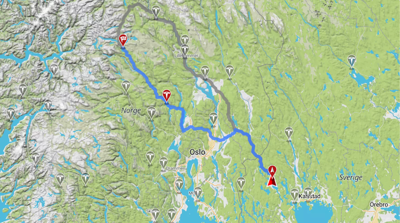
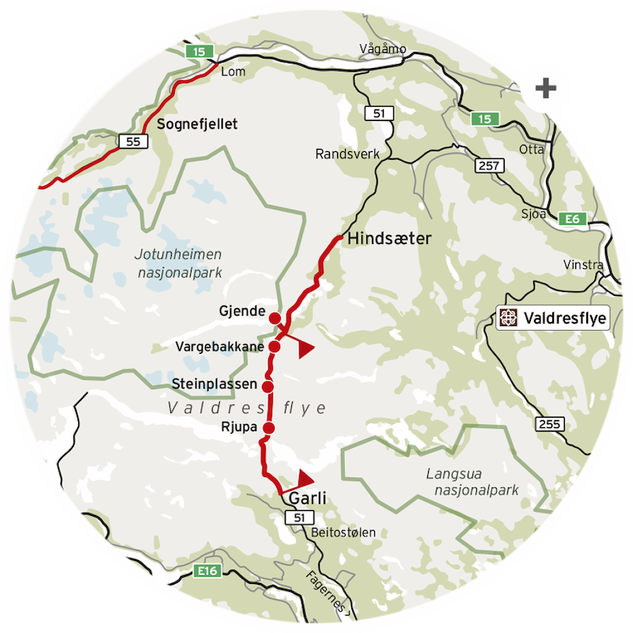
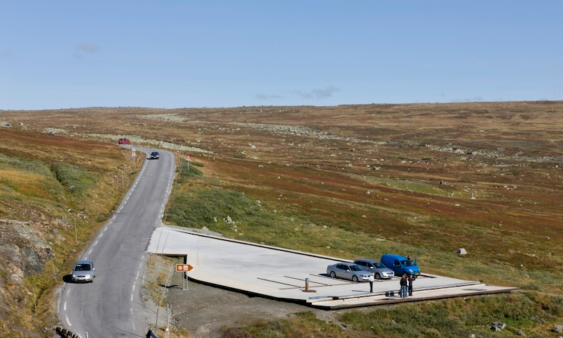
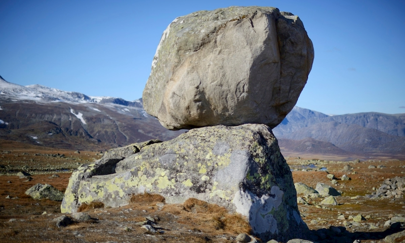
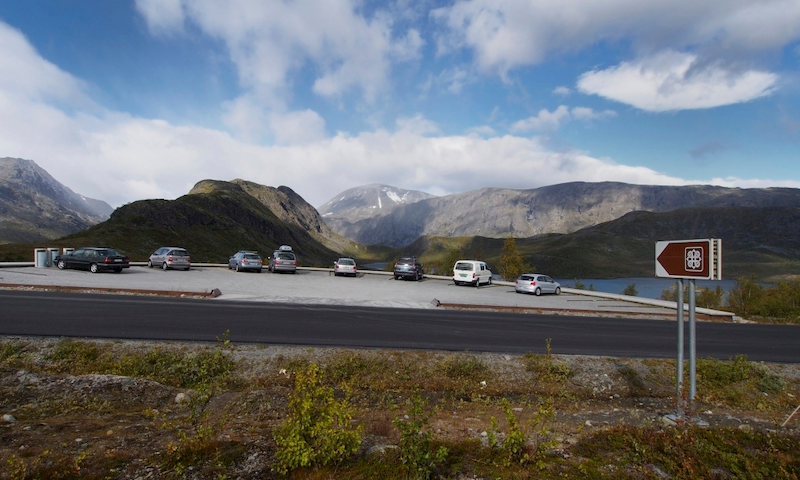
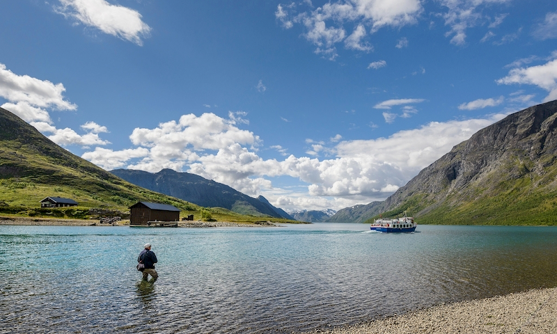

Dag 1: Från Jösse härdad genom finnskogarna till jättarnas hem
Arvika -> Beitostølen

Från Arvika åker vi till Charlottenberg, där vi kanske kan inhandla lite roadtrip-snacks. Därefter går skutan över norska gränsen till Kongsvinger och genom det norska landskapet. Denna sträcka tar oss till början av den södra delen av Valdresflye. Att köra i detta fjäll-landskap som här väntar kan "liknas med att flyga". Vägen slingar och sträcker sig fram i långa och duvande former.
Vid Beitostølen börjar Valdresflye. Här svävar vi bland fjällens vidder med utsikt över flera av Jotunheimens fjälltoppar.


Rjupa

Stenplassen
I Valdresflye stannar vi vid de fyra sevärdheter som rekommenderas av Nationella Turistvägar: Rjupa, Steinplassen, Vargebakkane och Gjende. Här utlovas fantastisk utsikt över fjäll och vidder!

Vargebakkane

Gjende. Här kanske vi även kan ta oss ett dopp?
Mellan Skåjåk och Geiranger verkar det finnas bra med sjöar och terräng att övernatta i.